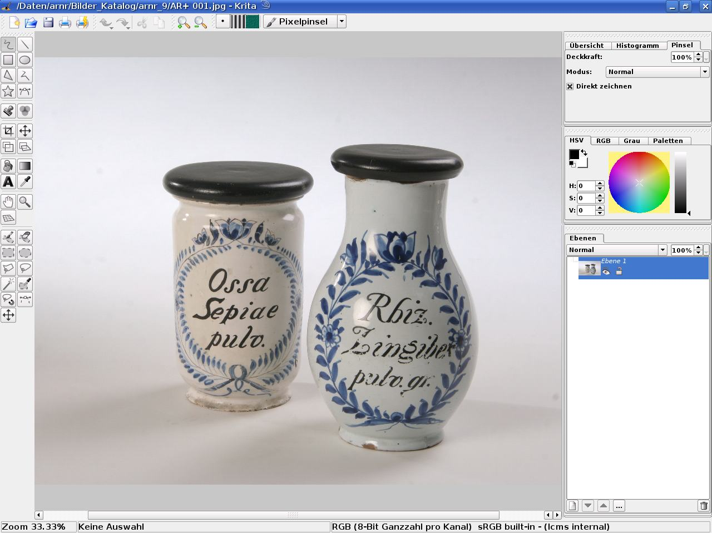

Das von den Toten auferstandene Krita, eine Anwendung aus der KDE Office Suite, ist mittlerweile ein wunderbares Programm, das auf das natürliche Malen am Computer spezialisiert ist. Es verwendet das digitale Äquivalent eines Pinsels auf dem Bildschirm, und es verfügt über innovative und höchst interessante Funktionen, etwa die Möglichkeit, den Trocknungsprozeß von echten Farben zu emulieren, oder Werzeuge zum präzisen Bearbeiten von Pinselstrichen. Dies alleine wäre schon Grund genug, es Ihrem Werkzeugkasten für gelegentliche künstlerische Arbeiten hinzuzufügen.
Für Scribus-Anwender ist darüber hinaus jedoch die große Zahl der unterstützten Bildformate und Farbräume interessant. Krita kann nicht nur im RGB-Farbraum arbeiten, sondern auch in CMYK, Graustufen (bis zu 16 Bit) und L*a*b. Dazu verwendet es wie Scribus littlecms. Krita bietet eine vollständige und einfache Umwandlung von RGB nach CMYK. Außerdem kann es 16-Bit-Bilder in 8-Bit-Bilder umwandeln, so daß man sie in Scribus verwenden kann (Scribus wird 16 Bit und vielleicht noch größere Farbtiefen in der Zukunft unterstützen).
Beachten Sie:
|  |